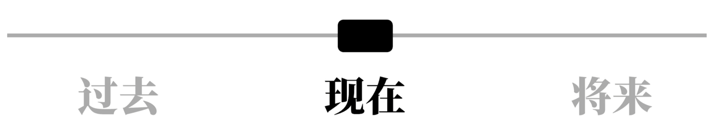
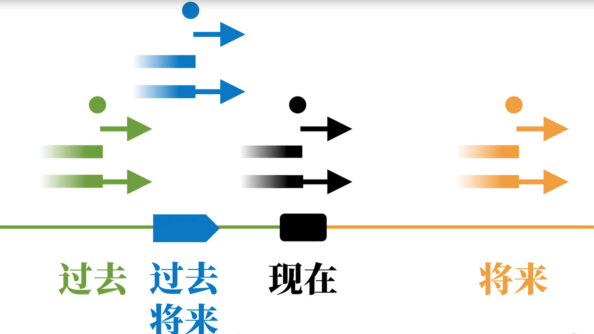
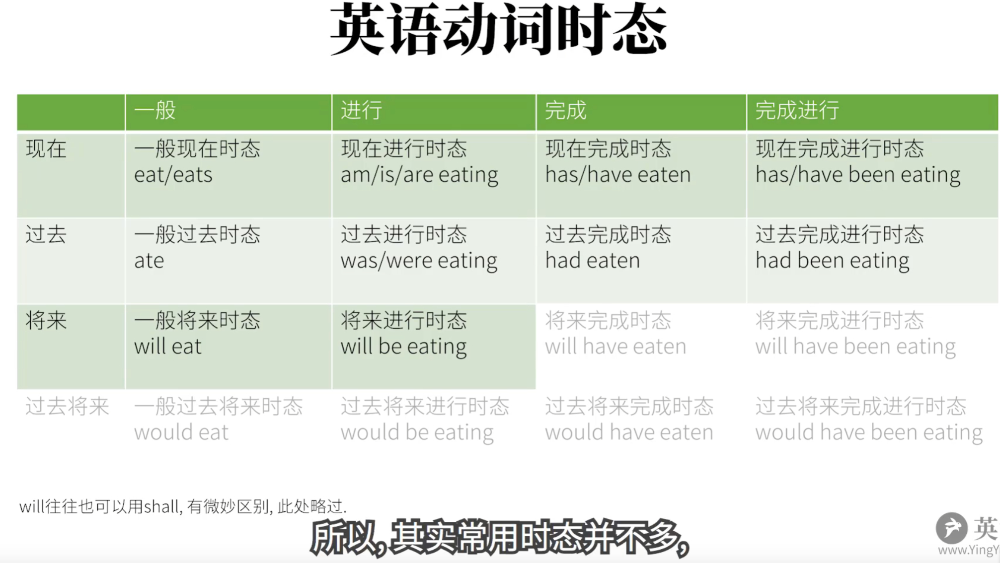

英语兔学习合集
前言
本篇用于记录日常学习自B站UP主英语兔专题合集，记录视频中提到的知识点，一方面用于个人学习回顾，另一方面用于学习整理分享。
英语兔B站主页：https://space.bilibili.com/483162496
文章附录会备注整个学习大纲的xmind导图文件，有需要可以直接下载。
声明：本篇仅作为学习笔记分享，请勿挪作它用，如有商业意图，请联系英语兔本人。
摘录原因
先写一部分原因（第一印象），等完整学习完成之后，再重新回过头来填写这部分内容。
- 发音确实纯正，很到位
- 演示文稿写的纯粹到位
- 内容程度：不是在教创新，而是将复杂内容简单化，以一种通俗易懂的方式讲授（暂时无法准确写出具体体会）
语法合集
学习语法的目的：造句
英语语法的核心就是动词！
基本核心框架
简单句
我们将哪些长句子拆分到不能拆分的为止，将这些句子称之为“简单句”。
而这些简单句，多数概括为“什么+怎么样”，这俩这构成一个 句子成分（Parts of Speech）
时态合集
我们通常所称的英语的时态，实际上准确的说是：动词的时间+动词的状态
动词时间
四种：过去、现在、将来、过去将来。
这里重点解释：过去将来，过去将来跟现在没有必然联系，可能会是下面两种情况：
过去将来时间在现实中并不常见，一般只出现在从句中，而像：过去将来完成进行时态，这种纯粹就是因为英语动词有能力构成这种时态，所以也就列举出来。
动词状态
进行状态
中文举例：这兔子正在吃着胡萝卜。
这里的正在吃，就表示兔子这个吃胡萝卜的动作（过程）正在进行中。完成状态
中文举例：这兔子吃掉了胡萝卜
这里的吃掉了，表明胡萝卜已经在兔子肚子里，吃完了，饱了。
注意：完成态的重点在于动作状态完成了，而并没有指出动作具体的发生时间。不管在哪种时间状态里，完成状态并不直接说明动作的具体开始时间。
- 完成进行状态
中文举例：这兔子从早上就开始吃胡萝卜，现在还没停呢。
言下之意：不但有好多胡萝卜进了兔子肚子里，这还没玩呢，这兔子还有一堆胡萝卜没吃呢。
注意：表示动作的一部分完成了，但是剩下的还在进行中
- 未说明（一般）状态：
这种状态比较特殊，可以理解为：没有特别指出的“默认的，简单的，一般的”状态。
中文举例：这兔子过去 吃胡萝卜，将来也 吃胡萝卜。
这里的 吃，过去？将来？过去将来？都不是，其实这个句子中并没有指出具体的动作的状态，也就是现阶段经常性发生的动作、物的永久状态，一般现在时
时间状态组合

现在时间
以现在时间为参照点，现在的动作就有四种状态：
- 现在进行中的状态，现在进行时态（Present Progressive Tense）
- 对现在而言的，已经完成了的状态：现在完成时态（Present Perfect Tense）
- 对现在而言，完成了的，但是接下来还会继续的状态：现在完成进行时态（Present Perfect Progressive Tense）
- 对现在而言，没有特别指出的状态：现在一般时态（Present Simple Tense）
过去时间
- 过去的，进行中的状态：过去进行时态（Past Progressive Tense）,例如：这兔子昨天下午3点那个时候正在吃胡萝卜。
- 对过去而言，完成了的状态：过去完成时态（Past Perfect Tense），例如：这兔子昨天下午3点那个时候已经吃完了胡萝卜。
- 对过去而言，完成了的，但是接下来还会继续的状态：过去完成进行时态（Past Perfect Progressive Tense），例如：这兔子昨天下午3点那个时候已经吃完了一些胡萝卜，还要继续吃（之后还要吃的什么时候，我们不得而知）。
- 对过去而言，没有特别指出的状态：过去一般时态（Past Simple Tense），例如：这兔子过去吃了胡萝卜（只是单纯表示这个动作发生在过去而已）。
将来时间
- 将来的，进行中的状态：将来进行时态（Future Progressive Tense）,例如：这兔子明天下午3点那个时候会正在吃胡萝卜。
- 对将来而言，完成了的状态：将来完成时态（Future Perfect Tense），例如：这兔子昨天下午3点那个时候会已经吃完了胡萝卜。（之前什么时候开始吃不知道，也可能现在就已经开始吃了，总之明天3点的时候，肯定吃完了）
- 对将来而言，完成了的，但是接下来还会继续的状态：将来完成进行时态（Future Perfect Progressive Tense），例如：这兔子明天下午3点那个时候已经吃完了一些胡萝卜，还要继续吃（什么时候开始吃，什么时候结束吃，我们都不知道，总之明天下午3点那个时候，已经吃了一段时间了，而且还不停止）。
- 对将来而言，没有特别指出的状态：将来一般时态（Future Simple Tense），例如：这兔子将来吃胡萝卜（只是单纯表示这个动作发生在将来而已）。
过去将来
备注：确实比较抽象，建议直接看英语兔的梦幻联动解释就好了。https://www.bilibili.com/video/BV1Sv411y7d8?t=46 11分钟开始
- 过去将来进行时态：（Past Future Progressive Tense）
- 过去将来完成时态：（Past Future Perfect Tense）
- 过去将来完成进行时态：（Past Future Perfect Progressive Tense）
- 过去将来一般时态：（Past Future Simple Tense）
总结起来，如果将这16中形态放在一条时间线上，应该就是这样子：

时态最容易犯错点
导致我们经常犯错，英语兔总结主要下面四点：
备注：个人感觉总结的非常到位，正是我苦恼了十几年的玩意儿。
- 时和态未分清：你必须要了解，时间和状态是怎么组合的，而不是一味地揉在一起。
- 动词变位（Verb Conjugation）现象：指的就是单词的拼写往往会改变，在中文中表示动作的时间和状态，比如：吃->吃了，你只需要加上描述时间的字眼就行了，本身不需要对动作本身作任何变动。在英语中则不同，表示不同的时态，不但往往要加上表示时间的信息，还往往会对动词的本身的拼写作出改动。
- 助动词（Auxiliary Verbs）：往往需要借助另外的动词来表述含义，往往也会包含着动词变位现象。
- 其它语法概念混合：例如结合情态动词、单纯的加情态、情态的基础上否定时间、情态的基础上改为被动，等等这些语法现象。
一般现在时态
语法构成： +动词原形，+动词原形+s（第三人称单数）
正如一般现在时的特性所述，这个过程往往并不是表示当前正在进行中的状态。更多的是：
- 表达事实，
例如：- I eat carrots. 我吃胡萝卜：我是吃胡萝卜这种食物的。（这是个事实陈述）
- The rabbit eats carrots. 兔子吃胡萝卜：兔子是吃胡萝卜的动物。（也是事实陈述）
- 表达习惯/重复的动作
例如：- I play basketball. 我打篮球.（我有这个习惯）
- 表示预计发生的事情
现在进行时态
语法构成： 助动词be的变位 + 动词的现在分词
be动词，这里有两个身份：
- （连）系动词：I am a smart rabbit. -> I = a smart rabbit.
- 助动词，构成时态
现在分词：通常就是在结尾加ing
现在完成时态
语法构成： 助动词hava的变为 + 动词的过去分词
have这里有两个身份：
- 实义动词：
- 助动词，构成时态
过去分词：通常在结尾加ed，但是有些动词是“不规则变化”，如：eat -> eaten
现在完成进行时态
语法构成： have的变为 + been + 动词的现在分词。看起来就是现在进行时与现在完成时的组合。
一般过去时态
语法构成： +动词的过去式。
通常：过去式，在动词结尾+ed。注意不要和动词的过去式和过去分词混淆。
过去进行时态
强调过去某个时间段，强调某个动作是进行过程中的。
语法构成： 助动词be的变位（考虑时间的变位，通常就是be动词的过去式） + 动词的现在分词
辨析：现在完成时态 VS. 一般过去时态 VS. 过去进行时态
现在完成时态：描述已经完成的动作（肯定是过去时间里完成的），后面两个过去时态，都是描述过去的动作。那么这三者有什么区别？
现在完成时态：通常表述过去发生的动作，而一般过去时态，通常表述过去发生的动作的结果。一个强调动作，一个强调结果。
例如：I have gone to Shanghai. / I went to Shanghai. 前者强调去上海这个动作，言下之意，你现在找不到我。而后者强调结果，我去过上海，言下之意，我回来了。
一般过去时态：通常表述过去一个动作做了没了，而过去进行时态表示：某个动作在过去某个时间是正在进行过程中的。一个点，一个时间段。
过去完成时态
语法构成： 助动词have的变位（have的过去式） + 动词的过去分词
在现在完成时态的基础上，将have改为had过去式。
过去完成时代：在过去的一个时间点（可能确定，也可能不确定）的基础上，还在之前发生的一个动作，持续一段时间，对过去那个确定/不确定的一个时间点造成的影响。
例如：He tried to find me yesterday afternoon, but I had already gone to Shanghai.
过去完成进行时态
跟现在完成进行时态概念类似，只是将时间节点挪到过去。强调过去已经进行了一个动作，还要在过去某个时间点之后，还要继续进行。
借助于助动词will/shall等来表达动词将来
英语“表达”将来时态
- 一般现在时态可以表达将来的动作，如: The bus leaves at 8PM.
- 助动词be的变位 + going + to + 动词原形，如： I am going to eat a carrot。
- 亦可是：上句中的going也可以省略，变为助动词be的变位 + to + 动词原形，如：You are to eat a carrot.
- 又或者也可以用介词about取代going，即：+ about + to + 动词原形，如：I am about to eat a carrot.
一般将来时态
语法构成： will + 动词原形，描述的跟一般过去时间描述的刚好相反，表述将来某个时间点发生的动作（说话者十分肯定会发生的事情）。
注意，如果不太确定，就不能用一般将来时态，此时就需要借助动词的“语气”来表述。
将来进行时态
语法构成： will + be + 动词的现在分词
在将来某个时间，表述某个动作正在进行过程中。一般将来时态相当于一张（你想象）的照片，将来进行时态相当于一段（你想象）的视频。
将来完成时态
语法构成 will + have + 动词的过去分词
将来那一点A的过去B（B和现在的前后不能确定），对将来那一点A的影响。
将来完成进行时态
就是跟现在完成进行时态变为：will + have + been + 动词的现在分词。
对将来某个时间点已经完成的一个动作，还要继续持续进行着。
过去将来时态
这里如果以现在的时间点作为参照，讨论过去将来，又是过去又是将来，会很矛盾。这里过去将来，是以过去某个时间点作为参考。
语法构成： would + 动词原形
时态总结
常用时态并不多

动词语气
最主要三种语气：
- 陈述语气
- 祈使语气
- 虚拟语气
其它例如： - 疑问语气
- 条件语气
- 感叹语气
陈述语气(Indicative Mood)
描述现实
祈使语气(Imperative Mood)
命令/请求。
通常：
- 用第二人称（“你”）用一般现在时态代替。
Youeat the carrot! -> Eat the carrot! - 去掉“你”，保证动词原形。
虚拟语气
之所以难是因为，中文中其实有同样意思的表达，但是在英文中，多了一个动词变位现象。英语在“描述动作/事件”这一方面的思维习惯：如果是描述你脑中的想象，尤其是和事实相反的，或者说“主观的意愿”，就要使用虚拟语气。如果是描述现实，或者直接请求/命令的，就使用祈使、陈述语气。
对“不可能”的假设
第一种用法： 和现在事实相反。
例如：If I saw the rabbit now, I would bite him.
条件句：过去式
主句：would + 动词原形
第二种用法： 和将来事实相反（可能性很小）
表面未来发生的可能发生的可能性较小
例如：If I should see the rabbit tomorrow, I would bite him.
条件句：should + 动词原形
主句：would + 动词原形
第三种用法： 和过去事实相反，动词过去式改成过去完成形态。
例如：If I had seen the rabbit a few days ago, I would have bitten him.
条件句：had + 动词过去分词
主句：would have + 动词过去分词
表达愿望、请求、建议、命令等
希望某个动作/事件发生，想象的，例如：
对现在的愿望：wish + 动词过去式，例如： I wish that I were a rabbit.
对过去的愿望：wish + had/would have + 动词过去分词，例如：I wish (that) I had eaten the carrot.
对将来的愿望：wish + should/count/might/would + 动词原形，例如：I wish (that) I could eat the carrot.
除wish之外，还有其它一些词，例如：
- would rather
- demand
- suggest
- insist
- order
上述几个词之后，均是 should +动词原形
英语从句
概括性总结
- 英语从句的原理
在英语中，一个句子A可以成为一个整句的某种句子成分，可以理解为，A成了整句其余部分B的附属，服“从”B，同时也不能独立成句，而B，也就成了A的“主”人。 - 英语从句的分类
按句子成分/句型分类：
- 主语 + 动词
- 主语 + 动词 + 宾语
- 主语 + 动词 + 间接宾语 + 直接宾语
- 主语 + 动词 + 宾语 + （宾语）补语
- 主语 + 动词 + （主语）补语（表语）
- 定语、状语、同位语
按照词类：动词、名词、代词、冠词、形容词、数词、副词、介词、叹词、连词
- 名词性从句：
- 主语从句
- 宾语从句
- 表语从句
- 宾语补语从句（出现的比较少）
- 同位语从句
- 定语从句（大形容词，形容词从句/关系【词】从句）
- 状语从句（大副词，副词性从句/副词从句）
- 时间状语从句：带有时间副词特性的
- 地点状语从句：带有地点副词特性的
- 条件、原因、方式、比较。。。状语从句
形容词从句
这是英语中最多、最杂、也是最难的一类从句。这类从句对某个人或者事物进行描述，具有形容词的性质，因此称之为形容词从句。同时在句子中也充当定语成分，所以有时候也通常称之为“定语从句”
形容词从句的思维方式
备注 这里英语兔先从中英文语法习惯分析开始，先从中文开始分析完了再引入英文，这点确实新颖，也容易理解。
中文构成定语非常简单：一个形容词/句子 + 的 + 名词就搞定了，例如：
- 好吃 的 胡萝卜
- 我买来 的 胡萝卜
- 我昨天再菜市场向刚从地里回来的乌龟哪儿买来 的 胡萝卜
英语则不一样了，例如一根我买来的胡萝卜，则要翻译成：
a carrot that I bought
这种方式可以理解为：在被修饰的词（carrot)之后，添加另一个和它有关系的词，然后再将这个新词放到另一个句子中进行补充说明/逻辑阐述。而这里的新词就是：关系词，被修饰的词就是：先行词，这里的另一个句子就是：定语从句/形容词从句/关系从句
说白了，中英文两种差异是：中文句子的定语都是“前置”的，英文中多数都是后置的。
形容词从句的构成
关系代词引导的形容词从句。
that vs. which
如果先行词是唯一的：that
相反如果先行词是多选一的：which
总结就是，用which可以换为that，但是指明了唯一属性的，那就只能用that
关系副词引导的形容词从句，例如：
- This was the place where = at which the rabbit ate the carrot.
- This is the reason why = for which the rabbit ate the carrot.
- That was the day when = on which the rabbit ate the carrot for the first time.
关系副词 = 介词 + which形容词从句的限定性和非限定性
例如： - I have a head which is round.(好几个头，其中一个是圆的)
- I have a head, which is round.（就一个，那个是圆的）
因此正因为非限定性形容词从句的这种“非限定”接着补充的特性，所以往往来作为句子的插入语。
The biggest carrot,which the rabbit ate, was on the table.
上句中的非限定性从句可以完全去掉，不影响句意。但是却不能这么说：The biggest carrot which the rabbite ate was on the table.
另外，比较特殊的是，非限定性定语从句不一定补充某个先行词，而是可以指代整句话，比如：
The rabbit ate the carrot, which was not surprising.
名词从句
包括如下：
- 主语从句
- 并于从句
- 表语从句
- 同位语从句
- 宾语补语从句
音标合集
英语语音技巧
==========